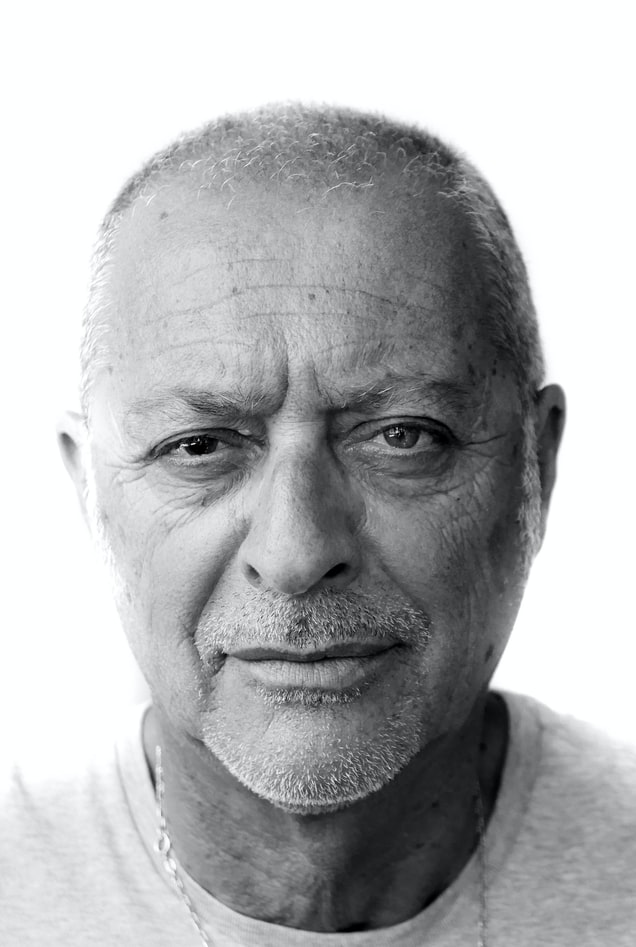

Khalid Bachel

Info
Khalid was born in the UK 61 years ago. He lives alone, he has no kids but he loves his four nieces.
He used to be an author and although he is retired, he writes for the local newspaper from time to time.
He loves gplaying chess and reading. He is not very keen with technology.
Goals
- Khalid loves to cook for his nieces. Usually they do it every Sunday.
- He likes to go to the local flea market to buy fresh vegetables.
- He loves take short travels outside the city. He is trying to spend more time to the nature.
Frustrations
- Khalid hates technology and he is trying to spend the minimum of time on it.
- He doesn't like big Malls and shopping centers.